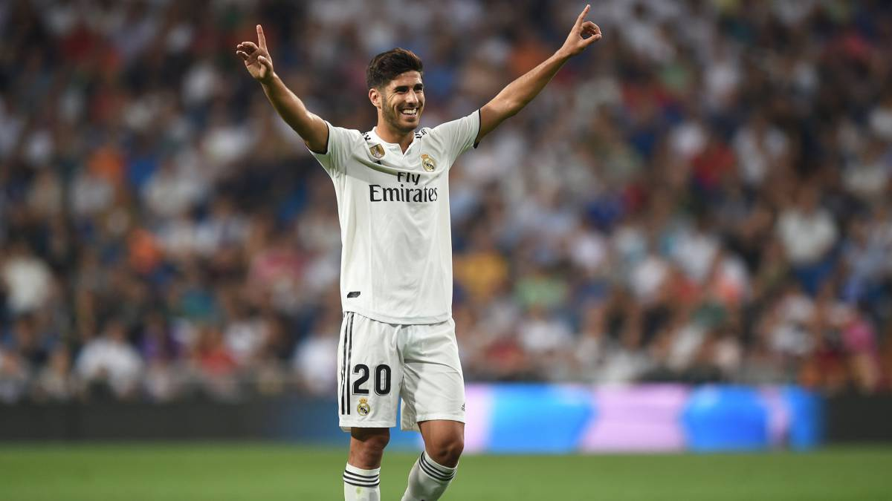

3. Karim Benzema Puts Pressure on Messi in Pichichi Race
Madrid’s star striker put on a show last night at the Di Stefano, scoring two goals, including one spectacular flick-and-volley from a Marco Asensio cross. The Frenchman now has 16 goals in La Liga this season, five behind league-leading Lionel Messi. Valencia was set to be Madrid’s toughest match post-restart, and it looks to be easy sailing for the rest of the season for Los Blancos. Due to Real Madrid’s easy schedule, Benzema can be expected to score quite a few more goals, which will really put the pressure on Messi to retain the coveted Pichichi.
4. Sergio Ramos Continues Great Run of Form
Madrid’s skipper has had a fantastic La Liga campaign and has arguably been the league’s best defender. Since the league has returned, Ramos has put in two quality performances. In the match against Eibar, he scored once and led the backline very well in the 60 minutes that he played. Against Valencia, he kept a clean sheet and created Madrid’s opening goal by putting in a perfect tackle and moving the ball to the forwards. Los Blancos will need their captain to continue with these kinds of performances if they want to have any shot at a league title.
5. Asensio has Near-Perfect Performance on La Liga Return
It would be an understatement to say that Madridistas were disappointed when Marco Asensio did not feature against Eibar on Sunday since he had not made an appearance since rupturing his ACL last July. Thankfully, Zidane did not make them sit through another match without releasing the young Spaniard to run riot in his typical fashion. With his first touch of the match, Asensio volleyed home Ferland Mendy’s cross, and you could see how much it meant to him and his teammates in their celebrations. Asensio capped off his perfect performance with an assist on Karim Benzema’s second goal, and deservedly took home the man of the match award.
